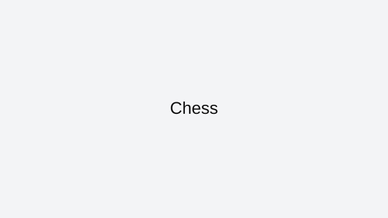

Chess
Online chess rewards fundamentals more than flashy tactics. Clean opening principles and blunder prevention beat memorized traps at most casual levels.
How to approach this game
Develop minor pieces early, fight for center squares, and castle before launching attacks. In the middlegame, improve your worst-placed piece first and calculate forcing moves before playing automatic recaptures.
Common mistakes to avoid
Most games are decided by one-move hangs. Slow down when pieces become tactical, and always ask what your opponent threatens after your move.
Who this game is best for
Chess is best for players who enjoy long-form strategy, deliberate planning, and steady skill growth.
Why it stays in our curated index
Chess stays in ArcadeZone's reviewed collection because it has a clear skill loop, reliable browser access, and enough real gameplay depth to justify written guidance. We do not keep indexed pages that only repeat generic descriptions or send users to thin external links.
Best session style for this game
Featured picks are chosen because they stay enjoyable even in quick sessions and still offer room to improve after the basics click.
Related reviewed games: 2048, Pac-Man, Snake.
ArcadeZone reviews this title for accessibility, control clarity, and replay value before keeping it in the curated index. Our goal is to help players choose the right game quickly, then improve through practical guidance instead of generic filler text.
What you'll love
- Curated review page with practical strategy guidance and clean navigation.
- Direct access to browser gameplay source with no installs required.
- Category fit: Featured gameplay style with related recommendations.
Game essentials
- Category: Featured
- Game type: Strategy
- Page status: Archive listing (not indexed)
- Play format: opens the original browser source in a new tab

How to play
Move pieces with click or tap controls, control the center early, and build toward checkmate while protecting your king.
Tips & Tricks
- Develop minor pieces early, fight for center squares, and castle before launching attacks. In the middlegame, improve your worst-placed piece first and calculate forcing moves before playing automatic recaptures.
- Most games are decided by one-move hangs. Slow down when pieces become tactical, and always ask what your opponent threatens after your move.
- Practice in short sessions and track one improvement goal per run to build measurable progress.
Frequently asked questions
How do beginners improve quickly in chess?
Stop one-move blunders first, then build opening principles and basic tactical awareness.
Should I memorize many openings?
Not initially. Development, king safety, and center control matter more.
What time control is best for learning?
Rapid or longer games usually improve decision quality better than ultra-fast blitz.
Play
Use the verified source link below to launch the game in a new tab.
Open Chess (external)Related games
More from ArcadeZone
Developer & Credits
ArcadeZone reviews Chess for control clarity, replay value, and accessibility before listing it as curated content. We link to the original browser source and provide player-focused guidance on this page.